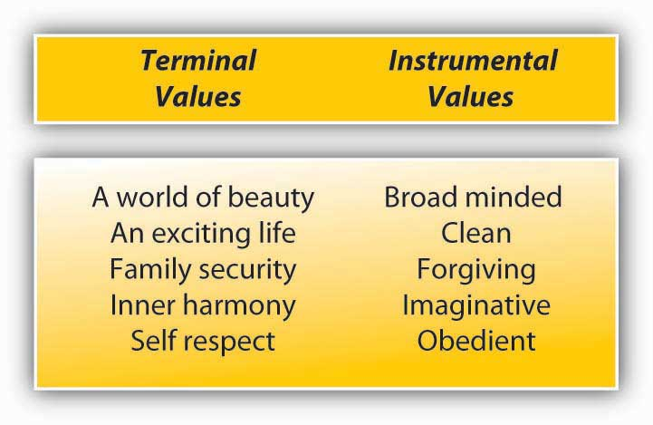
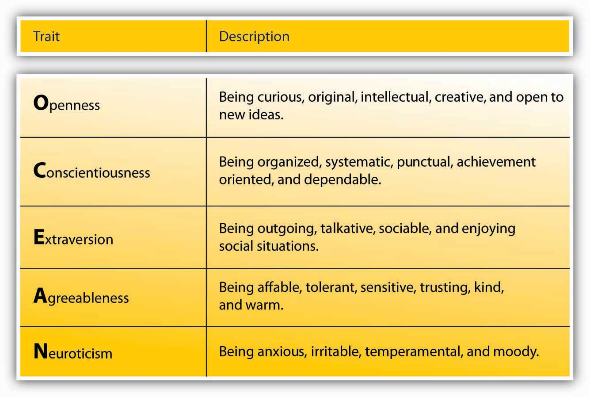
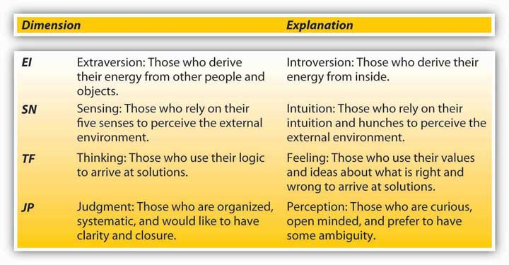

After reading this chapter, you should be able to do the following:
Individuals bring a number of differences to work, such as unique personalities, values, emotions, and moods. When new employees enter organizations, their stable or transient characteristics affect how they behave and perform. Moreover, companies hire people with the expectation that those individuals have certain skills, abilities, personalities, and values. Therefore, it is important to understand individual characteristics that matter for employee behaviors at work.
When people think about entrepreneurship, they often think of Guy Kawasaki (http://www.guykawasaki.com), who is a Silicon Valley venture capitalist and the author of nine books as of 2010, including The Art of the Start and The Macintosh Way. Beyond being a best-selling author, he has been successful in a variety of areas, including earning degrees from Stanford University and UCLA; being an integral part of Apple’s first computer; writing columns for Forbes and Entrepreneur Magazine; and taking on entrepreneurial ventures such as cofounding Alltop, an aggregate news site, and becoming managing director of Garage Technology Ventures. Kawasaki is a believer in the power of individual differences. He believes that successful companies include people from many walks of life, with different backgrounds and with different strengths and different weaknesses. Establishing an effective team requires a certain amount of self-monitoring on the part of the manager. Kawasaki maintains that most individuals have personalities that can easily get in the way of this objective. He explains, “The most important thing is to hire people who complement you and are better than you in specific areas. Good people hire people that are better than themselves.” He also believes that mediocre employees hire less-talented employees in order to feel better about themselves. Finally, he believes that the role of a leader is to produce more leaders, not to produce followers, and to be able to achieve this, a leader should compensate for their weaknesses by hiring individuals who compensate for their shortcomings.
Figure 3.1
Source: http://commons.wikimedia.org/wiki/File:Guy_Kawasaki,_2006.jpg by Dave Sifry.
In today’s competitive business environment, individuals want to think of themselves as indispensable to the success of an organization. Because an individual’s perception that he or she is the most important person on a team can get in the way, Kawasaki maintains that many people would rather see a company fail than thrive without them. He advises that we must begin to move past this and to see the value that different perceptions and values can bring to a company, and the goal of any individual should be to make the organization that one works for stronger and more dynamic. Under this type of thinking, leaving a company in better shape than one found it becomes a source of pride. Kawasaki has had many different roles in his professional career and as a result realized that while different perceptions and attitudes might make the implementation of new protocol difficult, this same diversity is what makes an organization more valuable. Some managers fear diversity and the possible complexities that it brings, and they make the mistake of hiring similar individuals without any sort of differences. When it comes to hiring, Kawasaki believes that the initial round of interviews for new hires should be held over the phone. Because first impressions are so important, this ensures that external influences, negative or positive, are not part of the decision-making process.
Many people come out of business school believing that if they have a solid financial understanding, then they will be a successful and appropriate leader and manager. Kawasaki has learned that mathematics and finance are the “easy” part of any job. He observes that the true challenge comes in trying to effectively manage people. With the benefit of hindsight, Kawasaki regrets the choices he made in college, saying, “I should have taken organizational behavior and social psychology” to be better prepared for the individual nuances of people. He also believes that working hard is a key to success and that individuals who learn how to learn are the most effective over time.
If nothing else, Guy Kawasaki provides simple words of wisdom to remember when starting off on a new career path: do not become blindsided by your mistakes, but rather take them as a lesson of what not to do. And most important, pursue joy and challenge your personal assumptions.
Case written by [citation redacted per publisher request]. Based on information from Bryant, A. (2010, March 19). Just give him 5 sentences, not “War and Peace.” New York Times. Retrieved March 26, 2010, from http://www.nytimes.com/2010/03/21/business/21corner.html?emc=eta1; Kawasaki, G. (2004). The art of the start: The time-tested, battle-hardened guide for anyone starting anything. New York: Penguin Group; Iwata, E. (2008, November 10). Kawasaki doesn’t accept failure; promotes learning through mistakes. USA Today, p. 3B. Retrieved April 2, 2010, from http://academic.lexisnexis.com/.
Individual differences matter in the workplace. Human beings bring in their personality, physical and mental abilities, and other stable traits to work. Imagine that you are interviewing an employee who is proactive, creative, and willing to take risks. Would this person be a good job candidate? What behaviors would you expect this person to demonstrate?
The question posed above is misleading. While human beings bring their traits to work, every organization is different, and every job within the organization is also different. According to the interactionist perspective, behavior is a function of the person and the situation interacting with each other. Think about it. Would a shy person speak up in class? While a shy person may not feel like speaking, if the individual is very interested in the subject, knows the answers to the questions, and feels comfortable within the classroom environment, and if the instructor encourages participation and participation is 30% of the course grade, regardless of the level of shyness, the person may feel inclined to participate. Similarly, the behavior you may expect from someone who is proactive, creative, and willing to take risks will depend on the situation.
When hiring employees, companies are interested in assessing at least two types of fit. Person–organization fitThe degree to which a person’s values, personality, goals, and other characteristics match those of the organization. refers to the degree to which a person’s values, personality, goals, and other characteristics match those of the organization. Person–job fitThe degree to which a person’s skill, knowledge, abilities, and other characteristics match the job demands. is the degree to which a person’s skill, knowledge, abilities, and other characteristics match the job demands. Thus, someone who is proactive and creative may be a great fit for a company in the high-tech sector that would benefit from risk-taking individuals, but may be a poor fit for a company that rewards routine and predictable behavior, such as accountants. Similarly, this person may be a great fit for a job such as a scientist, but a poor fit for a routine office job. The opening case illustrates one method of assessing person–organization and person–job fit in job applicants.
The first thing many recruiters look at is the person–job fit. This is not surprising, because person–job fit is related to a number of positive work attitudes such as satisfaction with the work environment, identification with the organization, job satisfaction, and work behaviors such as job performance. Companies are often also interested in hiring candidates who will fit into the company culture (those with high person–organization fit). When people fit into their organization, they tend to be more satisfied with their jobs, more committed to their companies, and more influential in their company, and they actually remain longer in their company.Anderson, C., Spataro, S. E., & Flynn, F. J. (2008). Personality and organizational culture as determinants of influence. Journal of Applied Psychology, 93, 702–710; Cable, D. M., & DeRue, D. S. (2002). The convergent and discriminant validity of subjective fit perceptions. Journal of Applied Psychology, 87, 875–884; Caldwell, D. F., & O’Reilly, C. A. (1990). Measuring person–job fit with a profile comparison process. Journal of Applied Psychology, 75, 648–657; Chatman, J. A. (1991). Matching people and organizations: Selection and socialization in public accounting firms. Administrative Science Quarterly, 36, 459–484; Judge, T. A., & Cable, D. M. (1997). Applicant personality, organizational culture, and organization attraction. Personnel Psychology, 50, 359–394; Kristof-Brown, A. L., Zimmerman, R. D., & Johnson, E. C. (2005). Consequences of individuals’ fit at work: A meta-analysis of person–job, person–organization, person-group, and person-supervisor fit. Personnel Psychology, 58, 281–342; O’Reilly, C. A., Chatman, J., & Caldwell, D. F. (1991). People and organizational culture: A profile comparison approach to assessing person–organization fit. Academy of Management Journal, 34, 487–516; Saks, A. M., & Ashforth, B. E. (2002). Is job search related to employment quality? It all depends on the fit. Journal of Applied Psychology, 87, 646–654. One area of controversy is whether these people perform better. Some studies have found a positive relationship between person–organization fit and job performance, but this finding was not present in all studies, so it seems that fitting with a company’s culture will only sometimes predict job performance.Arthur, W., Bell, S. T., Villado, A. J., & Doverspike, D. (2006). The use of person–organization fit in employment decision making: An assessment of its criterion-related validity. Journal of Applied Psychology, 91, 786–801. It also seems that fitting in with the company culture is more important to some people than to others. For example, people who have worked in multiple companies tend to understand the impact of a company’s culture better, and therefore they pay more attention to whether they will fit in with the company when making their decisions.Kristof-Brown, A. L., Jansen, K. J., & Colbert, A. E. (2002). A policy-capturing study of the simultaneous effects of fit with jobs, groups, and organizations. Journal of Applied Psychology, 87, 985–993. Also, when they build good relationships with their supervisors and the company, being a misfit does not seem to lead to dissatisfaction on the job.Erdogan, B., Kraimer, M. L., & Liden, R. C. (2004). Work value congruence and intrinsic career success. Personnel Psychology, 57, 305–332.
While personality traits and other individual differences are important, we need to keep in mind that behavior is jointly determined by the person and the situation. Certain situations bring out the best in people, and someone who is a poor performer in one job may turn into a star employee in a different job.
ValuesStable life goals people have, reflecting what is most important to them. refer to stable life goals that people have, reflecting what is most important to them. Values are established throughout one’s life as a result of the accumulating life experiences and tend to be relatively stable.Lusk, E. J., & Oliver, B. L. (1974). Research Notes. American manager’s personal value systems-revisited. Academy of Management Journal, 17(3), 549–554; Rokeach, M. (1973). The nature of human values. New York: Free Press. The values that are important to people tend to affect the types of decisions they make, how they perceive their environment, and their actual behaviors. Moreover, people are more likely to accept job offers when the company possesses the values people care about.Judge, T. A., & Bretz, R. D. (1992). Effects of work values on job choice decisions. Journal of Applied Psychology, 77, 261–271; Ravlin, E. C., & Meglino, B. M. (1987). Effect of values on perception and decision making: A study of alternative work values measures. Journal of Applied Psychology, 72, 666–673. Value attainment is one reason why people stay in a company, and when an organization does not help them attain their values, they are more likely to decide to leave if they are dissatisfied with the job itself.George, J. M., & Jones, G. R. (1996). The experience of work and turnover intentions: Interactive effects of value attainment, job satisfaction, and positive mood. Journal of Applied Psychology, 81, 318–325.
What are the values people care about? There are many typologies of values. One of the most established surveys to assess individual values is the Rokeach Value Survey.Rokeach, M. (1973). The nature of human values. New York: The Free Press. This survey lists 18 terminal and 18 instrumental values in alphabetical order. Terminal valuesEnd states people desire in life, such as leading a prosperous life and a world at peace. refer to end states people desire in life, such as leading a prosperous life and a world at peace. Instrumental valuesViews on acceptable modes of conduct, such as being honest and ethical, and being ambitious. deal with views on acceptable modes of conduct, such as being honest and ethical, and being ambitious.
According to Rokeach, values are arranged in hierarchical fashion. In other words, an accurate way of assessing someone’s values is to ask them to rank the 36 values in order of importance. By comparing these values, people develop a sense of which value can be sacrificed to achieve the other, and the individual priority of each value emerges.
Figure 3.2 Sample Items From Rokeach (1973) Value Survey
Where do values come from? Research indicates that they are shaped early in life and show stability over the course of a lifetime. Early family experiences are important influences over the dominant values. People who were raised in families with low socioeconomic status and those who experienced restrictive parenting often display conformity values when they are adults, while those who were raised by parents who were cold toward their children would likely value and desire security.Kasser, T., Koestner, R., & Lekes, N. (2002). Early family experiences and adult values: A 26-year prospective longitudinal study. Personality and Social Psychology Bulletin, 28, 826–835.
Values of a generation also change and evolve in response to the historical context that the generation grows up in. Research comparing the values of different generations resulted in interesting findings. For example, Generation Xers (those born between the mid-1960s and 1980s) are more individualistic and are interested in working toward organizational goals so long as they coincide with their personal goals. This group, compared to the baby boomers (born between the 1940s and 1960s), is also less likely to see work as central to their life and more likely to desire a quick promotion.Smola, K. W., & Sutton, C. D. (2002). Generational differences: Revisiting generational work values for the new millennium. Journal of Organizational Behavior, 23, 363–382.
The values a person holds will affect his or her employment. For example, someone who has an orientation toward strong stimulation may pursue extreme sports and select an occupation that involves fast action and high risk, such as fire fighter, police officer, or emergency medical doctor. Someone who has a drive for achievement may more readily act as an entrepreneur. Moreover, whether individuals will be satisfied at a given job may depend on whether the job provides a way to satisfy their dominant values. Therefore, understanding employees at work requires understanding the value orientations of employees.
PersonalityThe relatively stable feelings, thoughts, and behavioral patterns a person has. encompasses the relatively stable feelings, thoughts, and behavioral patterns a person has. Our personality differentiates us from other people, and understanding someone’s personality gives us clues about how that person is likely to act and feel in a variety of situations. In order to effectively manage organizational behavior, an understanding of different employees’ personalities is helpful. Having this knowledge is also useful for placing people in jobs and organizations.
If personality is stable, does this mean that it does not change? You probably remember how you have changed and evolved as a result of your own life experiences, attention you received in early childhood, the style of parenting you were exposed to, successes and failures you had in high school, and other life events. In fact, our personality changes over long periods of time. For example, we tend to become more socially dominant, more conscientious (organized and dependable), and more emotionally stable between the ages of 20 and 40, whereas openness to new experiences may begin to decline during this same time.Roberts, B. W., Walton, K. E., & Viechtbauer, W. (2006). Patterns of mean-level change in personality traits across the life course: A meta-analysis of longitudinal studies. Psychological Bulletin, 132, 1–25. In other words, even though we treat personality as relatively stable, changes occur. Moreover, even in childhood, our personality shapes who we are and has lasting consequences for us. For example, studies show that part of our career success and job satisfaction later in life can be explained by our childhood personality.Judge, T. A., & Higgins, C. A. (1999). The Big Five personality traits, general mental ability, and career success across the life span. Personnel Psychology, 52, 621–652; Staw, B. M., Bell, N. E., & Clausen, J. A. (1986). The dispositional approach to job attitudes: A lifetime longitudinal test. Administrative Science Quarterly, 31, 56–77.
Is our behavior in organizations dependent on our personality? To some extent, yes, and to some extent, no. While we will discuss the effects of personality for employee behavior, you must remember that the relationships we describe are modest correlations. For example, having a sociable and outgoing personality may encourage people to seek friends and prefer social situations. This does not mean that their personality will immediately affect their work behavior. At work, we have a job to do and a role to perform. Therefore, our behavior may be more strongly affected by what is expected of us, as opposed to how we want to behave. When people have a lot of freedom at work, their personality will become a stronger influence over their behavior.Barrick, M. R., & Mount, M. K. (1993). Autonomy as a moderator of the relationships between the Big Five personality dimensions and job performance. Journal of Applied Psychology, 78, 111–118.
How many personality traits are there? How do we even know? In every language, there are many words describing a person’s personality. In fact, in the English language, more than 15,000 words describing personality have been identified. When researchers analyzed the terms describing personality characteristics, they realized that there were many words that were pointing to each dimension of personality. When these words were grouped, five dimensions seemed to emerge that explain a lot of the variation in our personalities.Goldberg, L. R. (1990). An alternative “description of personality”: The big-five factor structure. Journal of Personality & Social Psychology, 59, 1216–1229. Keep in mind that these five are not necessarily the only traits out there. There are other, specific traits that represent dimensions not captured by the Big Five. Still, understanding the main five traits gives us a good start for describing personality. A summary of the Big Five traits is presented in Figure 3.4 "Big Five Personality Traits".
Figure 3.4 Big Five Personality Traits
OpennessThe degree to which a person is curious, original, intellectual, creative, and open to new ideas. is the degree to which a person is curious, original, intellectual, creative, and open to new ideas. People high in openness seem to thrive in situations that require being flexible and learning new things. They are highly motivated to learn new skills, and they do well in training settings.Barrick, M. R., & Mount, M. K. (1991). The Big Five personality dimensions and job performance: A meta-analysis. Personnel Psychology, 44, 1–26; Lievens, F., Harris, M. M., Van Keer, E., & Bisqueret, C. (2003). Predicting cross-cultural training performance: The validity of personality, cognitive ability, and dimensions measured by an assessment center and a behavior description interview. Journal of Applied Psychology, 88, 476–489. They also have an advantage when they enter into a new organization. Their open-mindedness leads them to seek a lot of information and feedback about how they are doing and to build relationships, which leads to quicker adjustment to the new job.Wanberg, C. R., & Kammeyer-Mueller, J. D. (2000). Predictors and outcomes of proactivity in the socialization process. Journal of Applied Psychology, 85, 373–385. When supported, they tend to be creative.Baer, M., & Oldham, G. R. (2006). The curvilinear relation between experienced creative time pressure and creativity: Moderating effects of openness to experience and support for creativity. Journal of Applied Psychology, 91, 963–970. Open people are highly adaptable to change, and teams that experience unforeseen changes in their tasks do well if they are populated with people high in openness.LePine, J. A. (2003). Team adaptation and postchange performance: Effects of team composition in terms of members’ cognitive ability and personality. Journal of Applied Psychology, 88, 27–39. Compared to people low in openness, they are also more likely to start their own business.Zhao, H., & Seibert, S. E. (2006). The Big Five personality dimensions and entrepreneurial status: A meta-analytic review. Journal of Applied Psychology, 91, 259–271.
ConscientiousnessThe degree to which a person is organized, systematic, punctual, achievement oriented, and dependable. refers to the degree to which a person is organized, systematic, punctual, achievement oriented, and dependable. Conscientiousness is the one personality trait that uniformly predicts how high a person’s performance will be, across a variety of occupations and jobs.Barrick, M. R., & Mount, M. K. (1991). The Big Five personality dimensions and job performance: A meta-analysis. Personnel Psychology, 44, 1–26. In fact, conscientiousness is the trait most desired by recruiters and results in the most success in interviews.Dunn, W. S., Mount, M. K., Barrick, M. R., & Ones, D. S. (1995). Relative importance of personality and general mental ability in managers’ judgments of applicant qualifications. Journal of Applied Psychology, 80, 500–509; Tay, C., Ang, S., & Van Dyne, L. (2006). Personality, biographical characteristics, and job interview success: A longitudinal study of the mediating effects of interviewing self-efficacy and the moderating effects of internal locus of control. Journal of Applied Psychology, 91, 446–454. This is not a surprise, because in addition to their high performance, conscientious people have higher levels of motivation to perform, lower levels of turnover, lower levels of absenteeism, and higher levels of safety performance at work.Judge, T. A., & Ilies, R. (2002). Relationship of personality to performance motivation: A meta-analytic review. Journal of Applied Psychology, 87, 797–807; Judge, T. A., Martocchio, J. J., & Thoresen, C. J. (1997). Five-factor model of personality and employee absence. Journal of Applied Psychology, 82, 745–755; Wallace, C., & Chen, G. (2006). A multilevel integration of personality, climate, self-regulation, and performance. Personnel Psychology, 59, 529–557; Zimmerman, R. D. (2008). Understanding the impact of personality traits on individuals’ turnover decisions: A meta-analytic path model. Personnel Psychology, 61, 309–348. One’s conscientiousness is related to career success and being satisfied with one’s career over time.Judge, T. A., & Higgins, C. A. (1999). The Big Five personality traits, general mental ability, and career success across the life span. Personnel Psychology, 52, 621–652. Finally, it seems that conscientiousness is a good trait to have for entrepreneurs. Highly conscientious people are more likely to start their own business compared to those who are not conscientious, and their firms have longer survival rates.Certo, S. T., & Certo, S. C. (2005). Spotlight on entrepreneurship. Business Horizons, 48, 271–274; Zhao, H., & Seibert, S. E. (2006). The Big Five personality dimensions and entrepreneurial status: A meta-analytic review. Journal of Applied Psychology, 91, 259–271.
ExtraversionThe degree to which a person is outgoing, talkative, sociable, and enjoys being in social situations. is the degree to which a person is outgoing, talkative, and sociable, and enjoys being in social situations. One of the established findings is that they tend to be effective in jobs involving sales.Barrick, M. R., & Mount, M. K. (1991). The Big Five personality dimensions and job performance: A meta-analysis. Personnel Psychology, 44, 1–26; Vinchur, A. J., Schippmann, J. S., Switzer, F. S., & Roth, P. L. (1998). A meta-analytic review of predictors of job performance for salespeople. Journal of Applied Psychology, 83, 586–597. Moreover, they tend to be effective as managers and they demonstrate inspirational leadership behaviors.Bauer, T. N., Erdogan, B., Liden, R. C., & Wayne, S. J. (2006). A longitudinal study of the moderating role of extraversion: Leader-member exchange, performance, and turnover during new executive development. Journal of Applied Psychology, 91, 298–310; Bono, J. E., & Judge, T. A. (2004). Personality and transformational and transactional leadership: A meta-analysis. Journal of Applied Psychology, 89, 901–910. Extraverts do well in social situations, and as a result they tend to be effective in job interviews. Part of their success comes from how they prepare for the job interview, as they are likely to use their social network.Caldwell, D. F., & Burger, J. M. (1998). Personality characteristics of job applicants and success in screening interviews. Personnel Psychology, 51, 119–136; Tay, C., Ang, S., & Van Dyne, L. (2006). Personality, biographical characteristics, and job interview success: A longitudinal study of the mediating effects of interviewing self-efficacy and the moderating effects of internal locus of control. Journal of Applied Psychology, 91, 446–454. Extraverts have an easier time than introverts when adjusting to a new job. They actively seek information and feedback, and build effective relationships, which helps with their adjustment.Wanberg, C. R., & Kammeyer-Mueller, J. D. (2000). Predictors and outcomes of proactivity in the socialization process. Journal of Applied Psychology, 85, 373–385. Interestingly, extraverts are also found to be happier at work, which may be because of the relationships they build with the people around them and their relative ease in adjusting to a new job.Judge, T. A., Heller, D., & Mount, M. K. (2002). Five-factor model of personality and job satisfaction: A meta-analysis. Journal of Applied Psychology, 87, 530–541. However, they do not necessarily perform well in all jobs, and jobs depriving them of social interaction may be a poor fit. Moreover, they are not necessarily model employees. For example, they tend to have higher levels of absenteeism at work, potentially because they may miss work to hang out with or attend to the needs of their friends.Judge, T. A., Martocchio, J. J., & Thoresen, C. J. (1997). Five-factor model of personality and employee absence. Journal of Applied Psychology, 82, 745–755.
AgreeablenessThe degree to which a person is nice, tolerant, sensitive, trusting, kind, and warm. is the degree to which a person is nice, tolerant, sensitive, trusting, kind, and warm. In other words, people who are high in agreeableness are likeable people who get along with others. Not surprisingly, agreeable people help others at work consistently, and this helping behavior is not dependent on being in a good mood.Ilies, R., Scott, B. A., & Judge, T. A. (2006). The interactive effects of personal traits and experienced states on intraindividual patterns of citizenship behavior. Academy of Management Journal, 49, 561–575. They are also less likely to retaliate when other people treat them unfairly.Skarlicki, D. P., Folger, R., & Tesluk, P. (1999). Personality as a moderator in the relationship between fairness and retaliation. Academy of Management Journal, 42, 100–108. This may reflect their ability to show empathy and give people the benefit of the doubt. Agreeable people may be a valuable addition to their teams and may be effective leaders because they create a fair environment when they are in leadership positions.Mayer, D., Nishii, L., Schneider, B., & Goldstein, H. (2007). The precursors and products of justice climates: Group leader antecedents and employee attitudinal consequences. Personnel Psychology, 60, 929–963. At the other end of the spectrum, people low in agreeableness are less likely to show these positive behaviors. Moreover, people who are not agreeable are shown to quit their jobs unexpectedly, perhaps in response to a conflict they engage with a boss or a peer.Zimmerman, R. D. (2008). Understanding the impact of personality traits on individuals’ turnover decisions: A meta-analytic path model. Personnel Psychology, 61, 309–348. If agreeable people are so nice, does this mean that we should only look for agreeable people when hiring? Some jobs may actually be a better fit for someone with a low level of agreeableness. Think about it: When hiring a lawyer, would you prefer a kind and gentle person, or a pit bull? Also, high agreeableness has a downside: Agreeable people are less likely to engage in constructive and change-oriented communication.LePine, J. A., & Van Dyne, L. (2001). Voice and cooperative behavior as contrasting forms of contextual performance: Evidence of differential relationships with Big Five personality characteristics and cognitive ability. Journal of Applied Psychology, 86, 326–336. Disagreeing with the status quo may create conflict and agreeable people will likely avoid creating such conflict, missing an opportunity for constructive change.
Go to http://www.outofservice.com/bigfive/ to see how you score on these factors.
NeuroticismThe degree to which a person is anxious, irritable, aggressive, temperamental, and moody. refers to the degree to which a person is anxious, irritable, aggressive, temperamental, and moody. These people have a tendency to have emotional adjustment problems and experience stress and depression on a habitual basis. People very high in neuroticism experience a number of problems at work. For example, they are less likely to be someone people go to for advice and friendship.Klein, K. J., Beng-Chong, L., Saltz, J. L., & Mayer, D. M. (2004). How do they get there? An examination of the antecedents of centrality in team networks. Academy of Management Journal, 47, 952–963. In other words, they may experience relationship difficulties. They tend to be habitually unhappy in their jobs and report high intentions to leave, but they do not necessarily actually leave their jobs.Judge, T. A., Heller, D., & Mount, M. K. (2002). Five-factor model of personality and job satisfaction: A meta-analysis. Journal of Applied Psychology, 87, 530–541; Zimmerman, R. D. (2008). Understanding the impact of personality traits on individuals’ turnover decisions: A meta-analytic path model. Personnel Psychology, 61, 309–348. Being high in neuroticism seems to be harmful to one’s career, as they have lower levels of career success (measured with income and occupational status achieved in one’s career). Finally, if they achieve managerial jobs, they tend to create an unfair climate at work.Mayer, D., Nishii, L., Schneider, B., & Goldstein, H. (2007). The precursors and products of justice climates: Group leader antecedents and employee attitudinal consequences. Personnel Psychology, 60, 929–963.
Aside from the Big Five personality traits, perhaps the most well-known and most often used personality assessment is the Myers-Briggs Type Indicator (MBTI). Unlike the Big Five, which assesses traits, MBTI measures types. Assessments of the Big Five do not classify people as neurotic or extravert: It is all a matter of degrees. MBTI on the other hand, classifies people as one of 16 types.Carlyn, M. (1977). An assessment of the Myers-Briggs Type Indicator. Journal of Personality Assessment, 41, 461–473; Myers, I. B. (1962). The Myers-Briggs Type Indicator. Princeton, NJ: Princeton University Press. In MBTI, people are grouped using four dimensions. Based on how a person is classified on these four dimensions, it is possible to talk about 16 unique personality types, such as ESTJ and ISTP.
MBTI was developed in 1943 by a mother–daughter team, Isabel Myers and Katherine Cook Briggs. Its objective at the time was to aid World War II veterans in identifying the occupation that would suit their personalities. Since that time, MBTI has become immensely popular, and according to one estimate, around 2.5 million people take the test annually. The survey is criticized because it relies on types as opposed to traits, but organizations who use the survey find it very useful for training and team-building purposes. More than 80 of the Fortune 100 companies used Myers-Briggs tests in some form. One distinguishing characteristic of this test is that it is explicitly designed for learning, not for employee selection purposes. In fact, the Myers & Briggs Foundation has strict guidelines against the use of the test for employee selection. Instead, the test is used to provide mutual understanding within the team and to gain a better understanding of the working styles of team members.Leonard, D., & Straus, S. (1997). Identifying how we think: The Myers-Briggs Type Indicator and the Hermann Brain Dominance Instrument. Harvard Business Review, 75(4), 114–115; Shuit, D. P. (2003). At 60, Myers-Briggs is still sorting out and identifying people’s types. Workforce Management, 82(13), 72–74.
Figure 3.6 Summary of MBTI Types
You may have noticed that behavior is also a function of moods. When people are in a good mood, they may be more cooperative, smile more, and act friendly. When these same people are in a bad mood, they may have a tendency to be picky, irritable, and less tolerant of different opinions. Yet, some people seem to be in a good mood most of the time, and others seem to be in a bad mood most of the time regardless of what is actually going on in their lives. This distinction is manifested by positive and negative affectivity traits. Positive affective peoplePeople who experience positive moods more frequently and tend to be happier at work. experience positive moods more frequently, whereas negative affective peoplePeople who experience negative moods with greater frequency, focus on the “glass half empty,” and experience more anxiety and nervousness. experience negative moods with greater frequency. Negative affective people focus on the “glass half empty” and experience more anxiety and nervousness.Watson, D., & Clark, L. A. (1984). Negative affectivity: The disposition to experience aversive emotional states. Psychological Bulletin, 96, 465–490. Positive affective people tend to be happier at work,Ilies, R., & Judge, T. A. (2003). On the heritability of job satisfaction: The mediating role of personality. Journal of Applied Psychology, 88, 750–759. and their happiness spreads to the rest of the work environment. As may be expected, this personality trait sets the tone in the work atmosphere. When a team comprises mostly negative affective people, there tend to be fewer instances of helping and cooperation. Teams dominated by positive affective people experience lower levels of absenteeism.George, J. M. (1989). Mood and absence. Journal of Applied Psychology, 74, 317–324. When people with a lot of power are also high in positive affectivity, the work environment is affected in a positive manner and can lead to greater levels of cooperation and finding mutually agreeable solutions to problems.Anderson, C., & Thompson, L. L. (2004). Affect from the top down: How powerful individuals’ positive affect shapes negotiations. Organizational Behavior and Human Decision Processes, 95, 125–139.
Employees who have high levels of neuroticism or high levels of negative affectivity may act overly negative at work, criticize others, complain about trivial things, or create an overall negative work environment. Here are some tips for how to work with them effectively.
Sources: Adapted from ideas in Ferguson, J. (2006, October 31). Expert’s view…on managing office moaners. Personnel Today, 29; Karcher, C. (2003, September), Working with difficult people. National Public Accountant, 39–40; Mudore, C. F. (2001, February/March). Working with difficult people. Career World, 29(5), 16–18; How to manage difficult people. (2000, May). Leadership for the Front Lines, 3–4.
Self-monitoringThe extent to which people are capable of monitoring their actions and appearance in social situations. refers to the extent to which a person is capable of monitoring his or her actions and appearance in social situations. In other words, people who are social monitors are social chameleons who understand what the situation demands and act accordingly, while low social monitors tend to act the way they feel.Snyder, M. (1974). Self-monitoring of expressive behavior. Journal of Personality and Social Psychology, 30, 526–537; Snyder, M. (1987). Public appearances/public realities: The psychology of self-monitoring. New York: Freeman. High social monitors are sensitive to the types of behaviors the social environment expects from them. Their greater ability to modify their behavior according to the demands of the situation and to manage their impressions effectively is a great advantage for them.Turnley, W. H., & Bolino, M. C. (2001). Achieving desired images while avoiding undesired images: Exploring the role of self-monitoring in impression management. Journal of Applied Psychology, 86, 351–360. In general, they tend to be more successful in their careers. They are more likely to get cross-company promotions, and even when they stay with one company, they are more likely to advance.Day, D. V., & Schleicher, D. J. Self-monitoring at work: A motive-based perspective. Journal of Personality, 74, 685-714; Kilduff, M., & Day, D. V. (1994). Do chameleons get ahead? The effects of self-monitoring on managerial careers. Academy of Management Journal, 37, 1047–1060. Social monitors also become the “go to” person in their company and they enjoy central positions in their social networks.Mehra, A., Kilduff, M., & Brass, D. J. (2001). The social networks of high and low self-monitors: Implications for workplace performance. Administrative Science Quarterly, 46, 121–146. They are rated as higher performers, and emerge as leaders.Day, D. V., Schleicher, D. J., Unckless, A. L., & Hiller, N. J. (2002). Self-monitoring personality at work: A meta-analytic investigation of construct validity. Journal of Applied Psychology, 87, 390–401. While they are effective in influencing other people and get things done by managing their impressions, this personality trait has some challenges that need to be addressed. First, when evaluating the performance of other employees, they tend to be less accurate. It seems that while trying to manage their impressions, they may avoid giving accurate feedback to their subordinates to avoid confrontations.Jawahar, I. M. (2001). Attitudes, self-monitoring, and appraisal behaviors. Journal of Applied Psychology, 86, 875–883. This tendency may create problems for them if they are managers. Second, high social monitors tend to experience higher levels of stress, probably caused by behaving in ways that conflict with their true feelings. In situations that demand positive emotions, they may act happy although they are not feeling happy, which puts an emotional burden on them. Finally, high social monitors tend to be less committed to their companies. They may see their jobs as a stepping-stone for greater things, which may prevent them from forming strong attachments and loyalty to their current employer.Day, D. V., Schleicher, D. J., Unckless, A. L., & Hiller, N. J. (2002). Self-monitoring personality at work: A meta-analytic investigation of construct validity. Journal of Applied Psychology, 87, 390–401.
Proactive personalityA person’s inclination to fix what is perceived to be wrong, change the status quo, and use initiative to solve problems. refers to a person’s inclination to fix what is perceived as wrong, change the status quo, and use initiative to solve problems. Instead of waiting to be told what to do, proactive people take action to initiate meaningful change and remove the obstacles they face along the way. In general, having a proactive personality has a number of advantages for these people. For example, they tend to be more successful in their job searches.Brown, D. J., Cober, R. T., Kane, K., Levy, P. E., & Shalhoop, J. (2006). Proactive personality and the successful job search: A field investigation with college graduates. Journal of Applied Psychology, 91, 717–726. They are also more successful over the course of their careers, because they use initiative and acquire greater understanding of the politics within the organization.Seibert, S. E. (1999). Proactive personality and career success. Journal of Applied Psychology, 84, 416–427; Seibert, S. E., Kraimer, M. L., & Crant, M. J. (2001). What do proactive people do? A longitudinal model linking proactive personality and career success. Personnel Psychology, 54, 845–874. Proactive people are valuable assets to their companies because they may have higher levels of performance.Crant, M. J. (1995). The proactive personality scale and objective job performance among real estate agents. Journal of Applied Psychology, 80, 532–537. They adjust to their new jobs quickly because they understand the political environment better and often make friends more quickly.Kammeyer-Mueller, J. D., & Wanberg, C. R. (2003). Unwrapping the organizational entry process: Disentangling multiple antecedents and their pathways to adjustment. Journal of Applied Psychology, 88, 779–794; Thompson, J. A. (2005). Proactive personality and job performance: A social capital perspective. Journal of Applied Psychology, 90, 1011–1017. Proactive people are eager to learn and engage in many developmental activities to improve their skills.Major, D. A., Turner, J. E., & Fletcher, T. D. (2006). Linking proactive personality and the Big Five to motivation to learn and development activity. Journal of Applied Psychology, 91, 927–935. Despite all their potential, under some circumstances a proactive personality may be a liability for an individual or an organization. Imagine a person who is proactive but is perceived as being too pushy, trying to change things other people are not willing to let go, or using their initiative to make decisions that do not serve a company’s best interests. Research shows that the success of proactive people depends on their understanding of a company’s core values, their ability and skills to perform their jobs, and their ability to assess situational demands correctly.Chan, D. (2006). Interactive effects of situational judgment effectiveness and proactive personality on work perceptions and work outcomes. Journal of Applied Psychology, 91, 475–481; Erdogan, B., & Bauer, T. N. (2005). Enhancing career benefits of employee proactive personality: The role of fit with jobs and organizations. Personnel Psychology, 58, 859–891.
Self-esteemThe degree to which a person has overall positive feelings about oneself. is the degree to which a person has overall positive feelings about his or herself. People with high self-esteem view themselves in a positive light, are confident, and respect themselves. On the other hand, people with low self-esteem experience high levels of self-doubt and question their self-worth. High self-esteem is related to higher levels of satisfaction with one’s job and higher levels of performance on the job.Judge, T. A., & Bono, J. E. (2001). Relationship of core self-evaluations traits—self esteem, generalized self efficacy, locus of control, and emotional stability—with job satisfaction and job performance: A meta-analysis. Journal of Applied Psychology, 86, 80–92. People with low self-esteem are attracted to situations in which they will be relatively invisible, such as large companies.Turban, D. B., & Keon, T. L. (1993). Organizational attractiveness: An interactionist perspective. Journal of Applied Psychology, 78, 184–193. Managing employees with low self-esteem may be challenging at times, because negative feedback given with the intention to improve performance may be viewed as a judgment on their worth as an employee. Therefore, effectively managing employees with relatively low self-esteem requires tact and providing lots of positive feedback when discussing performance incidents.
Self-efficacyA belief that one can perform a specific task successfully. is a belief that one can perform a specific task successfully. Research shows that the belief that we can do something is a good predictor of whether we can actually do it. Self-efficacy is different from other personality traits in that it is job specific. You may have high self-efficacy in being successful academically, but low self-efficacy in relation to your ability to fix your car. At the same time, people have a certain level of generalized self-efficacy and they have the belief that whatever task or hobby they tackle, they are likely to be successful in it.
Research shows that self-efficacy at work is related to job performance.Bauer, T. N., Bodner, T., Erdogan, B., Truxillo, D. M., & Tucker, J. S. (2007). Newcomer adjustment during organizational socialization: A meta-analytic review of antecedents, outcomes, and methods. Journal of Applied Psychology, 92, 707–721; Judge, T. A., Jackson, C. L., Shaw, J. C., Scott, B. A., & Rich, B. L. (2007). Self-efficacy and work-related performance: The integral role of individual differences. Journal of Applied Psychology, 92, 107–127; Stajkovic, A. D., & Luthans, F. (1998). Self-efficacy and work-related performance: A meta-analysis. Psychological Bulletin, 124, 240–261. This relationship is probably a result of people with high self-efficacy setting higher goals for themselves and being more committed to these goals, whereas people with low self-efficacy tend to procrastinate.Phillips, J. M., & Gully, S. M. (1997). Role of goal orientation, ability, need for achievement, and locus of control in the self-efficacy and goal setting process. Journal of Applied Psychology, 82, 792–802; Steel, P. (2007). The nature of procrastination: A meta-analytic and theoretical review of quintessential self-regulatory failure. Psychological Bulletin, 133, 65–94; Wofford, J. C., Goodwin, V. L., & Premack, S. (1992). Meta-analysis of the antecedents of personal goal level and of the antecedents and consequences of goal commitment. Journal of Management, 18, 595–615. Academic self-efficacy is a good predictor of your GPA, whether you persist in your studies, or drop out of college.Robbins, S. B., Lauver, K., Le, H., Davis, D., Langley, R., & Carlstrom, A. (2004). Do psychosocial and study skill factors predict college outcomes? A meta-analysis. Psychological Bulletin, 130, 261–288.
Is there a way of increasing employees’ self-efficacy? Hiring people who are capable of performing their tasks and training people to increase their self-efficacy may be effective. Some people may also respond well to verbal encouragement. By showing that you believe they can be successful and effectively playing the role of a cheerleader, you may be able to increase self-efficacy. Giving people opportunities to test their skills so that they can see what they are capable of doing (or empowering them) is also a good way of increasing self-efficacy.Ahearne, M., Mathieu, J., & Rapp, A. (2005). To empower or not to empower your sales force? An empirical examination of the influence of leadership empowerment behavior on customer satisfaction and performance. Journal of Applied Psychology, 90, 945–955.
Having high self-efficacy and self-esteem are boons to your career. People who have an overall positive view of themselves and those who have positive attitudes toward their abilities project an aura of confidence. How do you achieve higher self-confidence?
Sources: Adapted from information in Beagrie, S. (2006, September 26). How to…build up self confidence. Personnel Today, p. 31; Beste, F. J., III. (2007, November–December). Are you an entrepreneur? In Business, 29(6), 22; Goldsmith, B. (2006, October). Building self confidence. PA Times, Education Supplement, p. 30; Kennett, M. (2006, October). The scale of confidence. Management Today, p. 40–45; Parachin, V. M. (March 2003, October). Developing dynamic self-confidence. Supervision, 64(3), 13–15.
Locus of control deals with the degree to which people feel accountable for their own behaviors. Individuals with high internal locus of controlThe belief that a person controls their own destiny and what happens to them is their own doing. believe that they control their own destiny and what happens to them is their own doing, while those with high external locus of controlThe belief that things happen because of other people, luck, or a powerful being. feel that things happen to them because of other people, luck, or a powerful being. Internals feel greater control over their own lives and therefore they act in ways that will increase their chances of success. For example, they take the initiative to start mentor-protégé relationships. They are more involved with their jobs. They demonstrate higher levels of motivation and have more positive experiences at work.Ng, T. W. H., Soresen, K. L., & Eby, L. T. (2006). Locus of control at work: A meta-analysis. Journal of Organizational Behavior, 27, 1057–1087; Reitz, H. J., & Jewell, L. N. (1979). Sex, locus of control, and job involvement: A six-country investigation. Academy of Management Journal, 22, 72–80; Turban, D. B., & Dougherty, T. W. (1994). Role of protégé personality in receipt of mentoring and career success. Academy of Management Journal, 37, 688–702. Interestingly, internal locus is also related to one’s subjective well-being and happiness in life, while being high in external locus is related to a higher rate of depression.Benassi, V. A., Sweeney, P. D., & Dufour, C. L. (1988). Is there a relation between locus of control orientation and depression? Journal of Abnormal Psychology, 97, 357–367; DeNeve, K. M., & Cooper, H. (1998). The happy personality: A meta-analysis of 137 personality traits and subjective well-being. Psychological Bulletin, 124, 197–229. The connection between internal locus of control and health is interesting, but perhaps not surprising. In fact, one study showed that having internal locus of control at the age of 10 was related to a number of health outcomes, such as lower obesity and lower blood pressure later in life.Gale, C. R., Batty, G. D., & Deary, I. J. (2008). Locus of control at age 10 years and health outcomes and behaviors at age 30 years: The 1970 British Cohort Study. Psychosomatic Medicine, 70, 397–403. It is possible that internals take more responsibility for their health and adopt healthier habits, while externals may see less of a connection between how they live and their health. Internals thrive in contexts in which they have the ability to influence their own behavior. Successful entrepreneurs tend to have high levels of internal locus of control.Certo, S. T., & Certo, S. C. (2005). Spotlight on entrepreneurship. Business Horizons, 48, 271–274.
http://discoveryhealth.queendom.com/questions/lc_short_1.html
Personality is a potentially important predictor of work behavior. Matching people to jobs matters, because when people do not fit with their jobs or the company, they are more likely to leave, costing companies as much as a person’s annual salary to replace them. In job interviews, companies try to assess a candidate’s personality and the potential for a good match, but interviews are only as good as the people conducting them. In fact, interviewers are not particularly good at detecting the best trait that predicts performance: conscientiousness.Barrick, M. R., Patton, G. K., & Haugland, S. N. (2000). Accuracy of interviewer judgments of job applicant personality traits. Personnel Psychology, 53, 925–951. One method some companies use to improve this match and detect the people who are potentially good job candidates is personality testing. Companies such as Kronos and Hogan Assessment Systems conduct preemployment personality tests. Companies using them believe that these tests improve the effectiveness of their selection and reduce turnover. For example, Overnight Transportation in Atlanta found that using such tests reduced their on-the-job delinquency by 50%–100%.Emmett, A. (2004). Snake oil or science? That’s the raging debate on personality testing. Workforce Management, 83, 90–92; Gale, S. F. (2002). Three companies cut turnover with tests. Workforce, 81(4), 66–69.
Yet, are these methods good ways of selecting employees? Experts have not yet reached an agreement on this subject and the topic is highly controversial. Some experts believe, based on data, that personality tests predict performance and other important criteria such as job satisfaction. However, we must understand that how a personality test is used influences its validity. Imagine filling out a personality test in class. You may be more likely to fill it out as honestly as you can. Then, if your instructor correlates your personality scores with your class performance, we could say that the correlation is meaningful. In employee selection, one complicating factor is that people filling out the survey do not have a strong incentive to be honest. In fact, they have a greater incentive to guess what the job requires and answer the questions to match what they think the company is looking for. As a result, the rankings of the candidates who take the test may be affected by their ability to fake. Some experts believe that this is a serious problem.Morgeson, F. P., Campion, M. A., Dipboye, R. L., Hollenbeck, J. R., Murphy, K., & Schmitt, N. (2007). Reconsidering the use of personality tests in personnel selection contexts. Personnel Psychology, 60, 683–729; Morgeson, F. P., Campion, M. A., Dipboye, R. L., Hollenbeck, J. R., Murphy, K., & Schmitt, N. (2007). Are we getting fooled again? Coming to terms with limitations in the use of personality tests for personnel selection. Personnel Psychology, 60, 1029–1049. Others point out that even with fakingThe practice of answering questions in a way one thinks the company is looking for., the tests remain valid—the scores are still related to job performance.Barrick, M. R., & Mount, M. K. (1996). Effects of impression management and self-deception on the predictive validity of personality constructs. Journal of Applied Psychology, 81, 261–272; Ones, D. S., Dilchert, S., Viswesvaran, C., & Judge, T. A. (2007). In support of personality assessment in organizational settings. Personnel Psychology, 60, 995–1027; Ones, D. S., Viswesvaran, C., & Reiss, A. D. (1996). Role of social desirability in personality testing for personnel selection. Journal of Applied Psychology, 81, 660–679; Tett, R. P., & Christiansen, N. D. (2007). Personality tests at the crossroads: A response to Morgeson, Campion, Dipboye, Hollenbeck, Murphy, and Schmitt (2007). Personnel Psychology, 60, 967–993. It is even possible that the ability to fake is related to a personality trait that increases success at work, such as social monitoring. This issue raises potential questions regarding whether personality tests are the most effective way of measuring candidate personality.
Scores are not only distorted because of some candidates faking better than others. Do we even know our own personality? Are we the best person to ask this question? How supervisors, coworkers, and customers see our personality matters more than how we see ourselves. Therefore, using self-report measures of performance may not be the best way of measuring someone’s personality.Mount, M. K., Barrick, M. R., & Strauss, J. P. (1994). Validity of observer ratings of the Big Five personality factors. Journal of Applied Psychology, 79, 272–280. We all have blind areas. We may also give “aspirational” answers. If you are asked if you are honest, you may think, “Yes, I always have the intention to be honest.” This response says nothing about your actual level of honesty.
There is another problem with using these tests: How good a predictor of performance is personality anyway? Based on research, not a particularly strong one. According to one estimate, personality only explains about 10%–15% of variation in job performance. Our performance at work depends on so many factors, and personality does not seem to be the key factor for performance. In fact, cognitive ability (your overall mental intelligence) is a much more powerful influence on job performance, and instead of personality tests, cognitive ability tests may do a better job of predicting who will be good performers. Personality is a better predictor of job satisfaction and other attitudes, but screening people out on the assumption that they may be unhappy at work is a challenging argument to make in the context of employee selection.
In any case, if you decide to use these tests for selection, you need to be aware of their limitations. Relying only on personality tests for selection of an employee is a bad idea, but if they are used together with other tests such as tests of cognitive abilities, better decisions may be made. The company should ensure that the test fits the job and actually predicts performance. This process is called validating the test. Before giving the test to applicants, the company could give it to existing employees to find out the traits that are most important for success in the particular company and job. Then, in the selection context, the company can pay particular attention to those traits. The company should also make sure that the test does not discriminate against people on the basis of sex, race, age, disabilities, and other legally protected characteristics. Rent-A-Center experienced legal difficulties when the test they used was found to be a violation of the Americans with Disabilities Act (ADA). The test they used for selection, the Minnesota Multiphasic Personality Inventory, was developed to diagnose severe mental illnesses and included items such as “I see things or people around me others do not see.” In effect, the test served the purpose of a clinical evaluation and was discriminating against people with mental illnesses, which is a protected category under ADA.Heller, M. (2005). Court ruling that employer’s integrity test violated ADA could open door to litigation. Workforce Management, 84(9), 74–77.
Values and personality traits are two dimensions on which people differ. Values are stable life goals. When seeking jobs, employees are more likely to accept a job that provides opportunities for value attainment, and they are more likely to remain in situations that satisfy their values. Personality comprises the stable feelings, thoughts, and behavioral patterns people have. The Big Five personality traits (openness, conscientiousness, extraversion, agreeableness, and neuroticism) are important traits that seem to be stable and can be generalized to other cultures. Other important traits for work behavior include self-efficacy, self-esteem, social monitoring, proactive personality, positive and negative affectivity, and locus of control. It is important to remember that a person’s behavior depends on the match between the person and the situation. While personality is a strong influence on job attitudes, its relation to job performance is weaker. Some companies use personality testing to screen out candidates. This method has certain limitations, and companies using personality tests are advised to validate their tests and use them as a supplement to other techniques that have greater validity.
Our behavior is not only a function of our personality, values, and preferences, but also of the situation. We interpret our environment, formulate responses, and act accordingly. PerceptionThe process with which individuals detect and interpret environmental stimuli. may be defined as the process with which individuals detect and interpret environmental stimuli. What makes human perception so interesting is that we do not solely respond to the stimuli in our environment. We go beyond the information that is present in our environment, pay selective attention to some aspects of the environment, and ignore other elements that may be immediately apparent to other people. Our perception of the environment is not entirely rational. For example, have you ever noticed that while glancing at a newspaper or a news Web site, information that is interesting or important to you jumps out of the page and catches your eye? If you are a sports fan, while scrolling down the pages you may immediately see a news item describing the latest success of your team. If you are the parent of a picky eater, an advice column on toddler feeding may be the first thing you see when looking at the page. So what we see in the environment is a function of what we value, our needs, our fears, and our emotions.Higgins, E. T., & Bargh, J. A. (1987). Social cognition and social perception. Annual Review of Psychology, 38, 369–425; Keltner, D., Ellsworth, P. C., & Edwards, K. (1993). Beyond simple pessimism: Effects of sadness and anger on social perception. Journal of Personality and Social Psychology, 64, 740–752. In fact, what we see in the environment may be objectively, flat-out wrong because of our personality, values, or emotions. For example, one experiment showed that when people who were afraid of spiders were shown spiders, they inaccurately thought that the spider was moving toward them.Riskind, J. H., Moore, R., & Bowley, L. (1995). The looming of spiders: The fearful perceptual distortion of movement and menace. Behaviour Research and Therapy, 33, 171. In this section, we will describe some common tendencies we engage in when perceiving objects or other people, and the consequences of such perceptions. Our coverage of biases and tendencies in perception is not exhaustive—there are many other biases and tendencies on our social perception.
Our visual perception definitely goes beyond the physical information available to us. First of all, we extrapolate from the information available to us. Take a look at the following figure. The white triangle you see in the middle is not really there, but we extrapolate from the information available to us and see it there.Kellman, P. J., & Shipley, T. F. (1991). A theory of visual interpolation in object perception. Cognitive Psychology, 23, 141–221.
Figure 3.7
Our visual perception goes beyond the information physically available. In this figure, we see the white triangle in the middle even though it is not really there.
Figure 3.8

Which of the circles in the middle is bigger? At first glance, the one on the left may appear bigger, but they are in fact the same size. We compare the middle circle on the left to its surrounding circles, whereas the middle circle on the right is compared to the bigger circles surrounding it.
Our visual perception is often biased because we do not perceive objects in isolation. The contrast between our focus of attention and the remainder of the environment may make an object appear bigger or smaller. This principle is illustrated in the figure with circles. Which of the middle circles is bigger? To most people, the one on the left appears bigger, but this is because it is surrounded by smaller circles. The contrast between the focal object and the objects surrounding it may make an object bigger or smaller to our eye.
How do these tendencies influence behavior in organizations? You may have realized that the fact that our visual perception is faulty may make witness testimony faulty and biased. How do we know whether the employee you judge to be hardworking, fast, and neat is really like that? Is it really true, or are we comparing this person to other people in the immediate environment? Or let’s say that you do not like one of your peers and you think that this person is constantly surfing the Web during work hours. Are you sure? Have you really seen this person surf unrelated Web sites, or is it possible that the person was surfing the Web for work-related purposes? Our biased visual perception may lead to the wrong inferences about the people around us.
Human beings are prone to errors and biases when perceiving themselves. Moreover, the type of bias people have depends on their personality. Many people suffer from self-enhancement biasThe tendency to overestimate our performance and capabilities and to see ourselves in a more positive light than others see us.. This is the tendency to overestimate our performance and capabilities and see ourselves in a more positive light than others see us. People who have a narcissistic personality are particularly subject to this bias, but many others are still prone to overestimating their abilities.John, O. P., & Robins, R. W. (1994). Accuracy and bias in self-perception: Individual differences in self-enhancement and the role of narcissism. Journal of Personality and Social Psychology, 66, 206–219. At the same time, other people have the opposing extreme, which may be labeled as self-effacement biasThe tendency to underestimate our performance and capabilities, and to see events in a way that puts ourselves in a more negative light.. This is the tendency for people to underestimate their performance, undervalue capabilities, and see events in a way that puts them in a more negative light. We may expect that people with low self-esteem may be particularly prone to making this error. These tendencies have real consequences for behavior in organizations. For example, people who suffer from extreme levels of self-enhancement tendencies may not understand why they are not getting promoted or rewarded, while those who have a tendency to self-efface may project low confidence and take more blame for their failures than necessary.
When perceiving themselves, human beings are also subject to the false consensus errorHow we as human beings overestimate how similar we are to other people.. Simply put, we overestimate how similar we are to other people.Fields, J. M., & Schuman, H. (1976). Public beliefs about the beliefs of the public. Public Opinion Quarterly, 40(4), 427–448; Ross, L., Greene, D., & House, P. (1977). The “false consensus effect”: An egocentric bias in social perception and attribution processes. Journal of Experimental Social Psychology, 13, 279–301. We assume that whatever quirks we have are shared by a larger number of people than in reality. People who take office supplies home, tell white lies to their boss or colleagues, or take credit for other people’s work to get ahead may genuinely feel that these behaviors are more common than they really are. The problem for behavior in organizations is that, when people believe that a behavior is common and normal, they may repeat the behavior more freely. Under some circumstances this may lead to a high level of unethical or even illegal behaviors.
How we perceive other people in our environment is also shaped by our values, emotions, feelings, and personality. Moreover, how we perceive others will shape our behavior, which in turn will shape the behavior of the person we are interacting with.
One of the factors biasing our perception is stereotypesGeneralizations based on a perceived group characteristic.. Stereotypes are generalizations based on group characteristics. For example, believing that women are more cooperative than men, or men are more assertive than women, is a stereotype. Stereotypes may be positive, negative, or neutral. Human beings have a natural tendency to categorize the information around them to make sense of their environment. What makes stereotypes potentially discriminatory and a perceptual bias is the tendency to generalize from a group to a particular individual. If the belief that men are more assertive than women leads to choosing a man over an equally (or potentially more) qualified female candidate for a position, the decision will be biased, potentially illegal, and unfair.
Stereotypes often create a situation called a self-fulfilling prophecyThis happens when an established stereotype causes one to behave in a certain way, which leads the other party to behave in a way that makes the stereotype come true.. This cycle occurs when people automatically behave as if an established stereotype is accurate, which leads to reactive behavior from the other party that confirms the stereotype.Snyder, M., Tanke, E. D., & Berscheid, E. (1977). Social perception and interpersonal behavior: On the self-fulfilling nature of social stereotypes. Journal of Personality and Social Psychology, 35, 656–666. If you have a stereotype such as “Asians are friendly,” you are more likely to be friendly toward an Asian yourself. Because you are treating the other person better, the response you get may also be better, confirming your original belief that Asians are friendly. Of course, just the opposite is also true. Suppose you believe that “young employees are slackers.” You are less likely to give a young employee high levels of responsibility or interesting and challenging assignments. The result may be that the young employee reporting to you may become increasingly bored at work and start goofing off, confirming your suspicions that young people are slackers!
Stereotypes persist because of a process called selective perception. Selective perceptionWhen we pay selective attention to parts of the environment while ignoring other parts. simply means that we pay selective attention to parts of the environment while ignoring other parts. When we observe our environment, we see what we want to see and ignore information that may seem out of place. Here is an interesting example of how selective perception leads our perception to be shaped by the context: As part of a social experiment, in 2007 the Washington Post newspaper arranged Joshua Bell, the internationally acclaimed violin virtuoso, to perform in a corner of the Metro station in Washington DC. The violin he was playing was worth $3.5 million, and tickets for Bell’s concerts usually cost around $100. During the rush hour in which he played for 45 minutes, only one person recognized him, only a few realized that they were hearing extraordinary music, and he made only $32 in tips. When you see someone playing at the metro station, would you expect them to be extraordinary?Weingarten, G. (2007, April 8). Pearls before breakfast. Washington Post. Retrieved January 29, 2009, from http://www.washingtonpost.com/wp-dyn/content/article/2007/04/04/AR2007040401721.html.
Our background, expectations, and beliefs will shape which events we notice and which events we ignore. For example, the functional background of executives affects the changes they perceive in their environment.Waller, M. J., Huber, G. P., & Glick, W. H. (1995). Functional background as a determinant of executives’ selective perception. Academy of Management Journal, 38, 943–974. Executives with a background in sales and marketing see the changes in the demand for their product, while executives with a background in information technology may more readily perceive the changes in the technology the company is using. Selective perception may perpetuate stereotypes, because we are less likely to notice events that go against our beliefs. A person who believes that men drive better than women may be more likely to notice women driving poorly than men driving poorly. As a result, a stereotype is maintained because information to the contrary may not reach our brain.
Let’s say we noticed information that goes against our beliefs. What then? Unfortunately, this is no guarantee that we will modify our beliefs and prejudices. First, when we see examples that go against our stereotypes, we tend to come up with subcategories. For example, when people who believe that women are more cooperative see a female who is assertive, they may classify this person as a “career woman.” Therefore, the example to the contrary does not violate the stereotype, and instead is explained as an exception to the rule.Higgins, E. T., & Bargh, J. A. (1987). Social cognition and social perception. Annual Review of Psychology, 38, 369–425. Second, we may simply discount the information. In one study, people who were either in favor of or opposed to the death penalty were shown two studies, one showing benefits from the death penalty and the other discounting any benefits. People rejected the study that went against their belief as methodologically inferior and actually reinforced the belief in their original position even more.Lord, C. G., Ross, L., & Lepper, M. R. (1979). Biased assimilation and attitude polarization: The effects of prior theories on subsequently considered evidence. Journal of Personality and Social Psychology, 37, 2098–2109. In other words, trying to debunk people’s beliefs or previously established opinions with data may not necessarily help.
One other perceptual tendency that may affect work behavior is that of first impressionsInitial thoughts and perceptions we form about people, which tend to be stable and resilient to contrary information.. The first impressions we form about people tend to have a lasting impact. In fact, first impressions, once formed, are surprisingly resilient to contrary information. Even if people are told that the first impressions were caused by inaccurate information, people hold onto them to a certain degree. The reason is that, once we form first impressions, they become independent of the evidence that created them.Ross, L., Lepper, M. R., & Hubbard, M. (1975). Perseverance in self-perception and social perception: Biased attributional processes in the debriefing paradigm. Journal of Personality and Social Psychology, 32, 880–892. Any information we receive to the contrary does not serve the purpose of altering the original impression. Imagine the first day you met your colleague Anne. She treated you in a rude manner and when you asked for her help, she brushed you off. You may form the belief that she is a rude and unhelpful person. Later, you may hear that her mother is very sick and she is very stressed. In reality she may have been unusually stressed on the day you met her. If you had met her on a different day, you could have thought that she is a really nice person who is unusually stressed these days. But chances are your impression that she is rude and unhelpful will not change even when you hear about her mother. Instead, this new piece of information will be added to the first one: She is rude, unhelpful, and her mother is sick. Being aware of this tendency and consciously opening your mind to new information may protect you against some of the downsides of this bias. Also, it would be to your advantage to pay careful attention to the first impressions you create, particularly during job interviews.
A job interview is your first step to getting the job of your dreams. It is also a social interaction in which your actions during the first 5 minutes will determine the impression you make. Here are some tips to help you create a positive first impression.
Sources: Adapted from ideas in Bruce, C. (2007, October). Business Etiquette 101: Making a good first impression. Black Collegian, 38(1), 78–80; Evenson, R. (2007, May). Making a great first impression. Techniques, 14–17; Mather, J., & Watson, M. (2008, May 23). Perfect candidate. The Times Educational Supplement, 4789, 24–26; Messmer, M. (2007, July). 10 minutes to impress. Journal of Accountancy, 204(1), 13; Reece, T. (2006, November–December). How to wow! Career World, 35, 16–18.
Your colleague Peter failed to meet the deadline. What do you do? Do you help him finish up his work? Do you give him the benefit of the doubt and place the blame on the difficulty of the project? Or do you think that he is irresponsible? Our behavior is a function of our perceptions. More specifically, when we observe others behave in a certain way, we ask ourselves a fundamental question: Why? Why did he fail to meet the deadline? Why did Mary get the promotion? Why did Mark help you when you needed help? The answer we give is the key to understanding our subsequent behavior. If you believe that Mark helped you because he is a nice person, your action will be different from your response if you think that Mark helped you because your boss pressured him to.
An attributionThe causal explanation we give for an observed behavior. is the causal explanation we give for an observed behavior. If you believe that a behavior is due to the internal characteristics of an actor, you are making an internal attributionExplaining someone’s behavior using the internal characteristics of the actor.. For example, let’s say your classmate Erin complained a lot when completing a finance assignment. If you think that she complained because she is a negative person, you are making an internal attribution. An external attributionExplaining someone’s behavior by referring to the situation. is explaining someone’s behavior by referring to the situation. If you believe that Erin complained because finance homework was difficult, you are making an external attribution.
When do we make internal or external attributions? Research shows that three factors are the key to understanding what kind of attributions we make.
ConsensusThe degree to which other people behave the same way as the actor.: Do other people behave the same way?
DistinctivenessThe degree to which the actor behaves the same way across different situations.: Does this person behave the same way across different situations?
ConsistencyThe degree to which the actor behaves the same way on different occasions in the same situation.: Does this person behave this way in different occasions in the same situation?
Let’s assume that in addition to Erin, other people in the same class also complained (high consensus). Erin does not usually complain in other classes (high distinctiveness). Erin usually does not complain in finance class (low consistency). In this situation, you are likely to make an external attribution, such as thinking that finance homework is difficult. On the other hand, let’s assume that Erin is the only person complaining (low consensus). Erin complains in a variety of situations (low distinctiveness), and every time she is in finance, she complains (high consistency). In this situation, you are likely to make an internal attribution such as thinking that Erin is a negative person.Kelley, H. H. (1967). Attribution theory in social psychology. Nebraska Symposium on Motivation, 15, 192–238; Kelley, H. H. (1973). The processes of causal attribution. American Psychologist, 28, 107–128.
Interestingly though, our attributions do not always depend on the consensus, distinctiveness, and consistency we observe in a given situation. In other words, when making attributions, we do not always look at the situation objectively. For example, our overall relationship is a factor. When a manager likes a subordinate, the attributions made would be more favorable (successes are attributed to internal causes, while failures are attributed to external causes).Heneman, R. L., Greenberger, D. B., & Anonyou, C. (1989). Attributions and exchanges: The effects of interpersonal factors on the diagnosis of employee performance. Academy of Management Journal, 32, 466–476. Moreover, when interpreting our own behavior, we suffer from self-serving biasThe tendency to attribute our failures to the situation while attributing our successes to internal causes.. This is the tendency to attribute our failures to the situation while attributing our successes to internal causes.Malle, B. F. (2006). The actor-observer asymmetry in attribution: A (surprising) meta-analysis. Psychological Bulletin, 132, 895–919.
Table 3.1 Consensus, distinctiveness, and consistency determine the type of attribution we make in a given situation.
| Consensus | Distinctiveness | Consistency | Type of attribution |
|---|---|---|---|
| High consensus | High distinctiveness | Low consistency | External |
| Everyone else behaves the same way. | This person does not usually behave this way in different situations. | This person does not usually behave this way in this situation. | |
| Low consensus | Low distinctiveness | High consistency | Internal |
| No one else behaves the same way. | This person usually behaves this way in different situations. | Every time this person is in this situation, he or she acts the same way. |
How we react to other people’s behavior would depend on the type of attributions we make. When faced with poor performance, such as missing a deadline, we are more likely to punish the person if an internal attribution is made (such as “the person being unreliable”). In the same situation, if we make an external attribution (such as “the timeline was unreasonable”), instead of punishing the person we might extend the deadline or assign more help to the person. If we feel that someone’s failure is due to external causes, we may feel empathy toward the person and even offer help.LePine, J. A., & Van Dyne, L. (2001). Peer responses to low performers: An attributional model of helping in the context of groups. Academy of Management Review, 26, 67–84. On the other hand, if someone succeeds and we make an internal attribution (he worked hard), we are more likely to reward the person, whereas an external attribution (the project was easy) is less likely to yield rewards for the person in question. Therefore, understanding attributions is important to predicting subsequent behavior.
Perception is how we make sense of our environment in response to environmental stimuli. While perceiving our surroundings, we go beyond the objective information available to us, and our perception is affected by our values, needs, and emotions. There are many biases that affect human perception of objects, self, and others. When perceiving the physical environment, we fill in gaps and extrapolate from the available information. We also contrast physical objects to their surroundings and may perceive something as bigger, smaller, slower, or faster than it really is. In self-perception, we may commit the self-enhancement or self-effacement bias, depending on our personality. We also overestimate how much we are like other people. When perceiving others, stereotypes infect our behavior. Stereotypes may lead to self-fulfilling prophecies. Stereotypes are perpetuated because of our tendency to pay selective attention to aspects of the environment and ignore information inconsistent with our beliefs. When perceiving others, the attributions we make will determine how we respond to the situation. Understanding the perception process gives us clues to understand human behavior.
Our values and personality influence how ethical we behave. Situational factors, rewards, and punishments following unethical choices as well as a company’s culture are extremely important, but the role of personality and personal values should not be ignored. Research reveals that people who have an economic value orientation, that is, those who value acquiring money and wealth, tend to make more unethical choices. In terms of personality, employees with external locus of control were found to make more unethical choices.Hegarty, W. H., & Sims, H. P. (1978). Some determinants of unethical decision behavior: An experiment. Journal of Applied Psychology, 63, 451–457; Hegarty, W. H., & Sims, H. P. (1979). Organizational philosophy, policies, and objectives related to unethical decision behavior: A laboratory experiment. Journal of Applied Psychology, 64, 331–338; Trevino, L. K., & Youngblood, S. A. (1990). Bad apples in bad barrels: A causal analysis of ethical decision-making behavior. Journal of Applied Psychology, 75, 378–385.
Our perceptual processes are clear influences on whether or not we behave ethically and how we respond to other people’s unethical behaviors. It seems that self-enhancement bias operates for our ethical decisions as well: We tend to overestimate how ethical we are in general. Our self-ratings of ethics tend to be higher than how other people rate us. This belief can create a glaring problem: If we think that we are more ethical than we are, we will have little motivation to improve. Therefore, understanding how other people perceive our actions is important to getting a better understanding of ourselves.
How we respond to unethical behavior of others will, to a large extent, depend on the attributions we make. If we attribute responsibility to the person in question, we are more likely to punish that person. In a study on sexual harassment that occurred after a workplace romance turned sour, results showed that if we attribute responsibility to the victim, we are less likely to punish the harasser.Pierce, C. A., Broberg, B. J., McClure, J. R., & Aguinis, H. (2004). Responding to sexual harassment complaints: Effects of a dissolved workplace romance on decision-making standards. Organizational Behavior and Human Decision Processes, 95, 66–82. Therefore, how we make attributions in a given situation will determine how we respond to others’ actions, including their unethical behaviors.
Values that people care about vary around the world. In fact, when we refer to a country’s culture, we are referring to values that distinguish one nation from others. In other words, there is systematic variance in individuals’ personality and work values around the world, and this variance explains people’s behavior, attitudes, preferences, and the transferability of management practices to other cultures.
When we refer to a country’s values, this does not mean that everyone in a given country shares the same values. People differ within and across nations. There will always be people who care more about money and others who care more about relationships within each culture. Yet there are also national differences in the percentage of people holding each value. A researcher from Holland, Geert Hofstede, conducted a landmark study covering over 60 countries and found that countries differ in four dimensions: the extent to which they put individuals or groups first (individualism), whether the society subscribes to equality or hierarchy among people (power distance), the degree to which the society fears change (uncertainty avoidance), and the extent to which the culture emphasizes acquiring money and being successful (masculinity).Hofstede, G. (2001). Culture’s consequences: Comparing values, behaviors, institutions and organizations across nations. Thousand Oaks, CA: Sage. Knowing about the values held in a society will tell us what type of a workplace would satisfy and motivate employees.
Are personality traits universal? Researchers found that personality traits identified in Western cultures translate well to other cultures. For example, the five-factor model of personality is universal in that it explains how people differ from each other in over 79 countries. At the same time, there is variation among cultures in the dominant personality traits. In some countries, extraverts seem to be the majority, and in some countries the dominant trait is low emotional stability. For example, people from Europe and the United States are characterized by higher levels of extraversion compared to those from Asia and Africa. There are many factors explaining why some personality traits are dominant in some cultures. For example, the presence of democratic values is related to extraversion. Because democracy usually protects freedom of speech, people may feel more comfortable socializing with strangers as well as with friends, partly explaining the larger number of extraverts in democratic nations. Research also shows that in regions of the world that historically suffered from infectious diseases, extraversion and openness to experience was less dominant. Infectious diseases led people to limit social contact with strangers, explaining higher levels of introversion. Plus, to cope with infectious diseases, people developed strict habits for hygiene and the amount of spice to use in food, and deviating from these standards was bad for survival. This explains the lower levels of openness to experience in regions that experienced infectious diseases.McCrae, R. R., & Costa, P. T. (1997). Personality trait structure as a human universal. American Psychologist, 52, 509–516; McCrae, R. R., Terracciano, A., & 79 members of the personality profiles of cultures project (2005). Journal of Personality and Social Psychology, 89, 407–425; Schaller, M., & Murray, D. R. (2008). Pathogens, personality, and culture: Disease prevalence predicts worldwide variability in sociosexuality, extraversion, and openness to experience. Journal of Personality and Social Psychology, 95, 212–221.
Is basic human perception universal? It seems that there is variation around the globe in how we perceive other people as well as ourselves. One difference is the importance of the context. Studies show that when perceiving people or objects, Westerners pay more attention to the individual, while Asians pay more attention to the context. For example, in one study, when judging the emotion felt by the person, the Americans mainly looked at the face of the person in question, while the Japanese also considered the emotions of the people surrounding the focal person. In other words, the Asian subjects of the experiment derived meaning from the context as well as by looking at the person.Masuda, T., Ellsworth, P. C., Mesquita, B., Leu, J., Tanida, S., & Van de Veerdonk, E. (2008). Placing the face in context: Cultural differences in the perception of facial emotion. Journal of Personality and Social Psychology, 94, 365–381.
There seems to be some variation in the perceptual biases we commit as well. For example, human beings have a tendency to self-enhance. We see ourselves in a more positive light than others do. Yet, the traits in which we self-enhance are culturally dependent. In Western cultures, people may overestimate how independent and self-reliant they are. In Asian cultures, such traits are not necessarily desirable, so they may not embellish their degree of independence. Yet, they may overestimate how cooperative and loyal to the group they are because these traits are more desirable in collectivistic cultures.Sedikides, C., Gaertner, L., & Toguchi, Y. (2003). Pancultural self-enhancement. Journal of Personality and Social Psychology, 84, 60–79; Sedikides, C., Gaertner, L., & Vevea, J. L. (2005). Pancultural self-enhancement reloaded: A meta-analytic reply to Heine (2005). Journal of Personality and Social Psychology, 89, 539–551.
Given the variation in individual differences around the globe, being sensitive to these differences will increase our managerial effectiveness when managing a diverse group of people.
Which nations have the highest average self-esteem? Researchers asked this question by surveying almost 17,000 individuals across 53 nations, in 28 languages.
Based on this survey, these are the top 10 nations in terms of self-reported self-esteem.
The 10 nations with the lowest self-reported self-esteem are the following:
Source: Adapted from information in Denissen, J. J. A., Penke, L., & Schmitt, D. P. (2008, July). Self-esteem reactions to social interactions: Evidence for sociometer mechanisms across days, people, and nations. Journal of Personality and Social Psychology, 95, 181–196; Hitti, M. (2005). Who’s no. 1 in self-esteem? Serbia is tops, Japan ranks lowest, U.S. is no. 6 in global survey. WebMD. Retrieved November 14, 2008, from http://www.webmd.com/skin-beauty/news/20050927/whos-number-1-in-self-esteem; Schmitt, D. P., & Allik, J. (2005). The simultaneous administration of the Rosenberg self-esteem scale in 53 nationals: Culture-specific features of global self-esteem. Journal of Personality and Social Psychology, 89, 623–642.
There is a connection between how ethically we behave and our individual values, personality, and perception. Possessing values emphasizing economic well-being predicts unethical behavior. Having an external locus of control is also related to unethical decision making. We are also likely to overestimate how ethical we are, which can be a barrier against behaving ethically. Culture seems to be an influence over our values, personality traits, perceptions, attitudes, and work behaviors. Therefore, understanding individual differences requires paying careful attention to the cultural context.
Figure 3.10
Source: Kensavage.
You are interviewing a candidate for a position as a cashier in a supermarket. You need someone polite, courteous, patient, and dependable. The candidate you are talking to seems nice. But how do you know who is the right person for the job? Will the job candidate like the job or get bored? Will they have a lot of accidents on the job or be fired for misconduct? Don’t you wish you knew before hiring? One company approaches this problem scientifically, saving companies time and money on hiring hourly wage employees.
Retail employers do a lot of hiring, given their growth and high turnover rate. According to one estimate, replacing an employee who leaves in retail costs companies around $4,000. High turnover also endangers customer service. Therefore, retail employers have an incentive to screen people carefully so that they hire people with the best chance of being successful and happy on the job. Unicru, an employee selection company, developed software that quickly became a market leader in screening hourly workers. The company was acquired by Massachusetts-based Kronos Inc. (NASDAQ: KRON) in 2006 and is currently owned by a private equity firm.
The idea behind the software is simple: If you have a lot of employees and keep track of your data over time, you have access to an enormous resource. By analyzing this data, you can specify the profile of the “ideal” employee. The software captures the profile of the potential high performers, and applicants are screened to assess their fit with this particular profile. More important, the profile is continually updated as new employees are hired. As the database gets larger, the software does a better job of identifying the right people for the job.
If you applied for a job in retail, you may have already been a part of this database: the users of this system include giants such as Universal Studios, Costco Wholesale Corporation, Burger King, and other retailers and chain restaurants. In companies such as Albertsons or Blockbuster, applicants use a kiosk in the store to answer a list of questions and to enter their background, salary history, and other information. In other companies, such as some in the trucking industry, candidates enter the data through the Web site of the company they are applying to. The software screens people on basic criteria such as availability in scheduling as well as personality traits.
Candidates are asked to agree or disagree with statements such as “I often make last-minute plans” or “I work best when I am on a team.” After the candidates complete the questions, hiring managers are sent a report complete with a color-coded suggested course of action. Red means the candidate does not fit the job, yellow means proceed with caution, and green means the candidate can be hired on the spot. Interestingly, the company contends that faking answers to the questions of the software is not easy because it is difficult for candidates to predict the desired profile. For example, according to their research, being a successful salesman has less to do with being an extraverted and sociable person and more to do with a passion for the company’s product.
Matching candidates to jobs has long been viewed as a key way of ensuring high performance and low turnover in the workplace, and advances in computer technology are making it easier and more efficient to assess candidate–job fit. Companies using such technology are cutting down the time it takes to hire people, and it is estimated that using such technologies lowers their turnover by 10%–30%.
Case written by [citation redacted per publisher request]. Based on information from Berta, D. (2002, February 25). Industry increases applicant screening amid labor surplus, security concerns. Nation’s Restaurant News, 36(8), 4; Frauenheim, E. (2006, March 13). Unicru beefs up data in latest screening tool. Workforce Management, 85(5), 9–10; Frazier, M. (2005, April). Help wanted. Chain Store Age, 81(4), 37–39; Haaland, D. E. (2006, April 17). Safety first: Hire conscientious employees to cut down on costly workplace accidents. Nation’s Restaurant News, 40(16), 22–24; Overholt, A. (2002, February). True or false? You’re hiring the right people. Fast Company, 55, 108–109; Rafter, M. V. (2005, May). Unicru breaks through in the science of “smart hiring.” Workforce Management, 84(5), 76–78.
In conclusion, in this chapter we have reviewed major individual differences that affect employee attitudes and behaviors. Our values and personality explain our preferences and the situations we feel comfortable with. Personality may influence our behavior, but the importance of the context in which behavior occurs should not be neglected. Many organizations use personality tests in employee selection, but the use of such tests is controversial because of problems such as faking and low predictive value of personality for job performance. Perception is how we interpret our environment. It is a major influence over our behavior, but many systematic biases color our perception and lead to misunderstandings.
You are applying for the job of sales associate. You have just found out that you will be given a personality assessment as part of the application process. You feel that this job requires someone who is very high in extraversion, and someone who can handle stress well. You are relatively sociable and can cope with some stress but honestly you are not very high in either trait. The job pays well and it is a great stepping-stone to better jobs. How are you going to respond when completing the personality questions? Are you going to make an effort to represent yourself as how you truly are? If so, there is a chance that you may not get the job. How about answering the questions to fit the salesperson profile? Isn’t everyone doing this to some extent anyway?
Discussion Questions
Changing Others’ Perceptions of You
How do other people perceive you? Identify one element of how others perceive you that you are interested in changing. It could be a positive perception (maybe they think you are more helpful than you really are) or a negative perception (maybe they think you don’t take your studies seriously).
Selecting an Expatriate Using Personality Tests
Your department has over 50 expatriates working around the globe. One of the problems you encounter is that the people you send to other cultures for long-term (2- to 5-year) assignments have a high failure rate. They either want to return home before their assignment is complete, or they are not very successful in building relationships with the local employees. You suspect that this is because you have been sending people overseas solely because of their technical skills, which does not seem to be effective in predicting whether these people will make a successful adjustment to the local culture. Now you have decided that when selecting people to go on these assignments, personality traits should be given some weight.